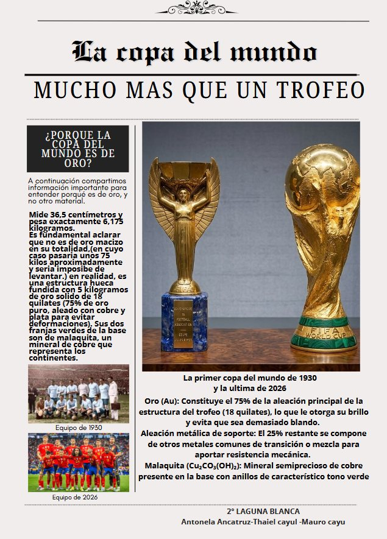
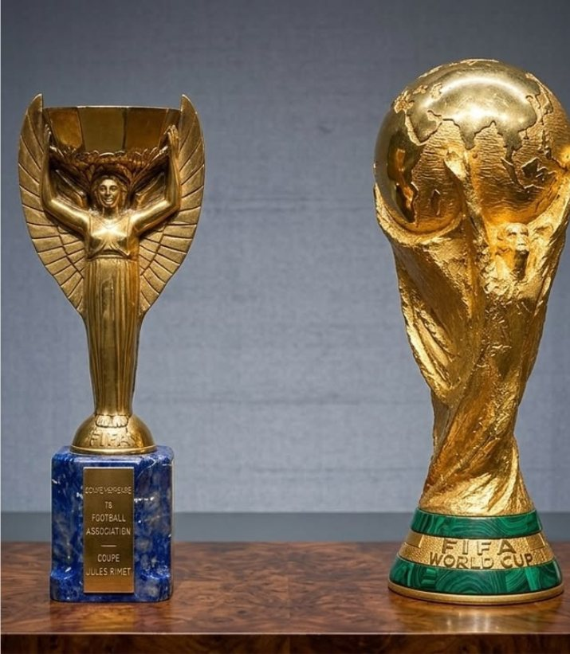
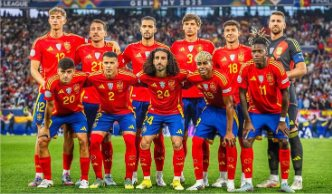

¿Por qué la Copa del Mundo es de oro?
A continuación compartimos información importante para entender por qué es de oro y no de otro material.

No es oro macizo
El trofeo mide 36,5 centímetros y pesa exactamente 6,175 kilogramos. Es fundamental aclarar que no es de oro macizo en su totalidad: en ese caso pesaría unos 75 kilos y sería imposible de levantar.
En realidad, es una estructura hueca fundida con 5 kilogramos de oro sólido de 18 quilates (75% de oro puro, aleado con cobre y plata para evitar deformaciones).

La malaquita de la base
Sus dos franjas verdes de la base son de malaquita, un mineral de cobre que representa los continentes.
Composición química del trofeo
- Oro (Au): constituye el 75% de la aleación principal de la estructura del trofeo (18 quilates), lo que le otorga su brillo y evita que sea demasiado blando.
- Aleación metálica de soporte: el 25% restante se compone de otros metales comunes de transición para aportar resistencia mecánica.
- Malaquita Cu₂CO₃(OH)₂: mineral semiprecioso de cobre, presente en la base con anillos de característico tono verde.
Antonela Ancatruz · Thaiel Cayul · Mauro Cayu · Sede Laguna Blanca
